Seed round · September 2026
FACT//DUEL
A 1v1 sports-and-science knowledge duel, built as a daily habit before it is built as a business.
Confidential. Prepared for the named recipient only; not for distribution or publication. Every number carries its source. Figures marked (P) are a plan, not a forecast. FACT//DUEL has no users and no revenue.
SEED ROUND — SEPTEMBER 2026
FACT//DUEL — the 1v1 knowledge duel, rebuilt for a daily habit loop
A 1v1 sports-and-science knowledge duel, built as a daily habit before it is built as a business.
- A head-to-head duel on sports and science, designed as a 3-4 minute unit against the 3.1-3.5 minute median mobile session (GameAnalytics estimate).
- Playable now in a browser at https://occult-kranti.github.io/fact-duel/: no install, no account, no server, 54 sample questions.
- Zero users outside a private playtest. Zero revenue. Stated here so it is never a discovery later.
- Raising about $1.2M for 18 months to buy one thing: the retention data this deck does not have.
Speaker notes
THE PROBLEM — THE VACUUM
A format with hundreds of millions of lifetime installs, and essentially no maintained incumbent.
- Trivia Crack: 267,939,837 lifetime Android installs per Google Play's internal store data, displayed publicly as 100M+ — installs, not users.
- Its Play listing is now retitled around a FOX TV tie-in: the largest lifetime install base in the category has left the duel.
- QuizDuel's owner MAG Interactive: nine-month average group DAU -14% and MAU -13% YoY (Sep 2025 - May 2026); for Q3 alone, -12% and -9%.
- QuizDuel itself is live and maintained — iOS build updated 10 Sep 2026 — and tiny in the US: 3.51 stars from 78 US iOS ratings.
- Everything else marketing itself as live 1v1: Quizion, 10+ downloads (updated 13 Aug 2026); TRIVIA GO!, 10K+, no update since 22 May 2025.
- The format proved demand at scale and has essentially no maintained incumbent. That gap is the entire reason to keep reading.
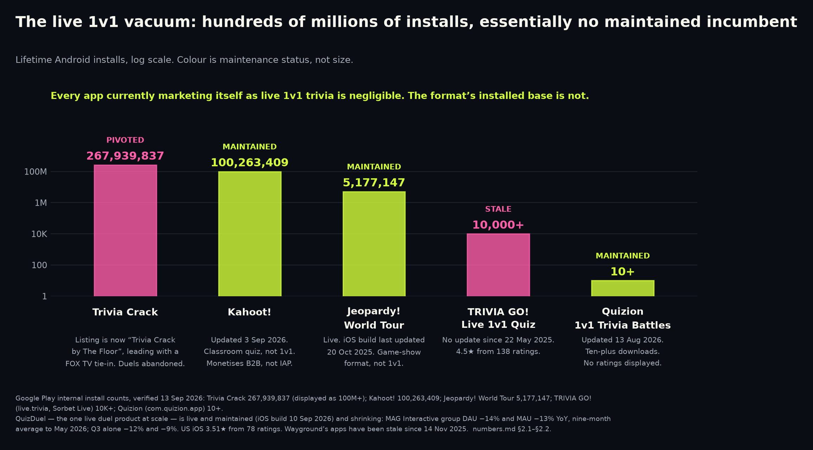
Speaker notes
THE GRAVEYARD
It did not die of distribution. It died of monetisation and long-tail retention.
- Trivia Royale: 2.5M downloads in about three weeks on a launch budget under $500,000 — a blended $0.20 or less per download, organic and viral included. Company-reported to TechCrunch, not audited.
- 45% day-one iOS retention, around 30 minutes of use a day — both company-reported to TechCrunch, not audited. Closed eight months after launch.
- HQ Trivia: 2.38M peak concurrent (28 Mar 2018), then roughly 67,000 monthly installs in Jan 2020, about 3% of the ~2M/month Feb 2018 rate (Sensor Tower estimates).
- It did not end there: bought and relaunched 29 Mar 2020, last official game 17 Nov 2022, removed from both stores 5 Aug 2023.
- QuizUp: about $32.4M of equity raised; sold to Glu in 2016 for $7.5M of cancelled notes, booked at $3.2M fair value.
- Near-free acquisition and elite D1 were necessary and demonstrably not sufficient. Distribution was never the binding constraint here — monetisation and long-tail retention were.
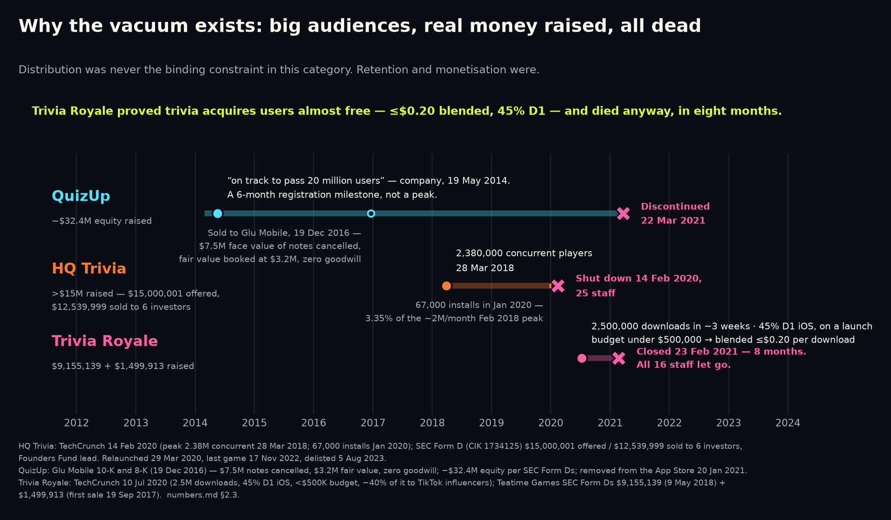
Speaker notes
THE SOLUTION
So the bet is sequencing: build the habit loop first, prove retention, then monetise.
- GameAnalytics estimates the median mobile game session at 3.1-3.5 min and North America at 3.64 min (CY2025, iOS and Android installs — not web).
- A duel is designed as a 3-4 minute unit. The app now records sessions and engaged time, but with no players we have measured no session length of our own (numbers.md §5.15, §7.1).
- Around the duel, product description rather than audited fact: XP and levels, day streaks, daily quests, achievements, a device-local rank, gems, cosmetics.
- Solo expeditions and a static event calendar are intended to cover the days when nobody wants a live opponent. No retention benefit has been measured.
- Zero revenue today (numbers.md status paragraph, §5.15). Monetisation is sequenced last by choice, and that choice is unproven.
- The comparables on slide 3 failed on monetisation and long-tail retention. Retention is the gate; monetisation is downstream of a number we do not have.
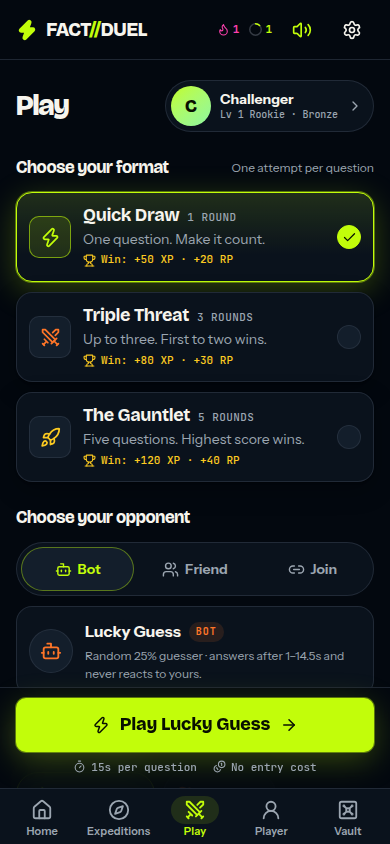
Speaker notes
PRODUCT — PLAY IT, DO NOT TAKE OUR WORD FOR IT
Playable now in a browser — no install, no account, no server. A full duel in about fifteen seconds.
- Open https://occult-kranti.github.io/fact-duel/ on a phone or a laptop: no download, no signup, no server call.
- Fifteen seconds: pick a mode, answer the first question, finish a complete bot duel and see the result screen.
- The static build carries bot duels in all three modes, expeditions, discovery, the vault, the passport, the events calendar and the limited modes (numbers.md §7.2).
- Two-device friend duels genuinely need a server and are disabled in that build, with an on-screen notice saying so.
- Progression stays device-local with no accounts, and /analytics shows the player their own record with JSON and CSV export and erase (§7.1).
- The practice opponent carries a BOT badge in the opponent picker. A full opponent-integrity answer is milestone 5 in numbers.md §4.4 — it ships before monetisation.
- 54 sample questions, zero users, zero revenue: nothing on this page is a traction claim.
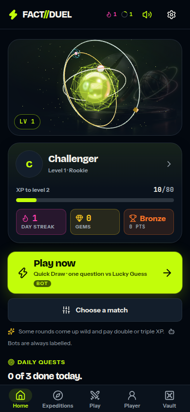
Speaker notes
PRODUCT — THE NON-DUEL SURFACE
Solo routes and a static event calendar are built for the days without a duel.
- Solo expeditions are short untimed routes with a Steady-or-Bold risk choice locked in before each answer (lib/expeditions.mjs).
- Limited-time modes are derived from the calendar: one opens on a real fixture or announcement and closes when its window closes (lib/events.mjs).
- The calendar is static and hand-checked, and the date it was last verified is printed in the app. No live feed, no scores API, no rights deal (lib/events-data.mjs).
- No cadence and no retention effect is claimed for any of it. The instrument that would measure one shipped on 13 Sep 2026; the players it needs have not (numbers.md §7.1).
- The graveyard died of monetisation and long-tail retention (§2.3). This surface is our untested answer to the second of those.
- The bank is 54 sample questions today. Growing it is milestone 4: a target and a production rate we have not set yet.
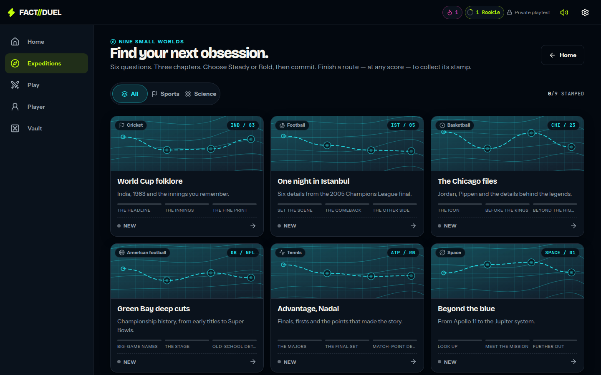
Speaker notes
- FACT//DUEL internal: public/product/investor/numbers.md — status paragraph and §5.15 (company disclosure)
- FACT//DUEL internal: public/product/investor/numbers.md §2.3, §4.3 and §4.4 (company disclosure)
- FACT//DUEL internal: repository — product code, unaudited
- FACT//DUEL internal: public/product/investor/numbers.md §7.1 and §7.2 (company disclosure)
MARKET
TAM-A $1.69bn – $2.83bn, sized bottom-up from one population forecast and two filings.
- EMARKETER forecasts 216.8M US adults — 80.6% of the adult population — using a smartphone as a second screen in 2026 (forecast published April 2026).
- 216.8M x $7.80-$13.07 revenue per active user per year = TAM-A $1.69bn - $2.83bn. An upper bound: no activation, retention or conversion discount is applied.
- Neither end is reported by anyone; both are derived. Low: Duolingo FY2025 revenue ÷ the 133.1M MAU reported at 31 Dec 2025 — a ratio Duolingo does not publish.
- High: MAG Interactive nine-month group net sales ÷ group MAU, annualised — group-level across its whole portfolio, unaudited interim, not QuizDuel standalone.
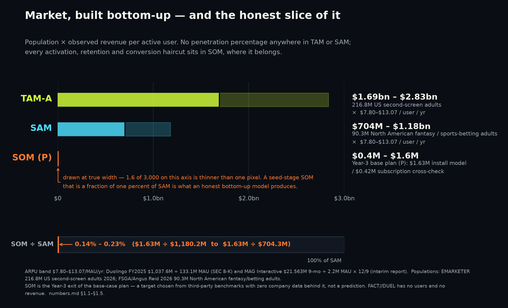
Speaker notes
WHY NOW
Why now: the duel has no maintained incumbent, and a habit loop passed $1bn of total revenue.
- Trivia Crack's listing is now built around a FOX TV tie-in. The largest lifetime Android install base in the category — 267,939,837 installs, Google Play's own count — has pivoted away from duels.
- Duolingo, a habit app built on a streak/XP/quest loop, passed $1bn of total revenue: $1,037.6M in FY2025, with 12.2M paid subscribers at year-end 2025.
- On US iOS in CY2025, AppTweak estimates trivia has the lowest page-view-to-install rate of about 38 categories: 5.2% against an 8.56% all-category average.
- On Google Play the same pass puts trivia above average: 19.8% against 16.15%. Both were read from AppTweak chart data in our own verification pass and are flagged for re-confirmation (§5.2).
- A web-first product has no iOS product page at all — an argument, not a measured advantage: we have no verified web-first conversion benchmark of any kind (§5.14).
- Nothing here depends on a new technology. It depends on a 1v1 duel format with no maintained incumbent.
Speaker notes
TRACTION — STATED PLAINLY
Zero users. Zero revenue. No cohort. The instrument that measures retention is built, tested and shipped — the round buys the cohort to point it at.
- No users outside a private playtest, no revenue, no cohort, 54 sample questions. Nothing on this page is a traction claim.
- Shipped 13 Sep 2026: install day, active days, sessions, engaged time and per-device D1/D7/D30, with a player-facing /analytics screen, JSON and CSV export and erase (24 tests, numbers.md §7.1).
- Also shipped: an opt-in anonymous daily ping whose report is aggregate-only, with buckets under five devices suppressed — a cohort rate becomes computable the day there are players (20 tests).
- One device can only ever answer yes, no, or not-yet. A rate needs a cohort; that is what is missing, and that is what the round buys.
- Milestone 1 existed because nothing was measurable without accounts. Measurement landed without them, so milestones 1 and 2 are de-risked from build-then-measure to simply run the cohort.
- Milestone 2 — publish D1/D7/D30 against GameAnalytics estimates (16,000+ mobile games, iOS and Android, CY2025): NA medians 23.28% / 4.97% / 1.18%.
- Target — beat that 4.97% NA median D7 on a cohort of at least 1,000 players. The benchmark is measured on app-store installs and we are a web app, so transfer is unproven.
- Milestones 4-6 are untouched: grow the bank from 54 questions, ship an opponent-integrity answer before monetisation, validate exactly one monetisation route.
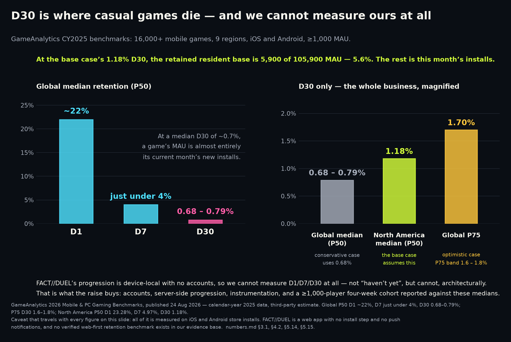
Speaker notes
BUSINESS MODEL
We copy the habit subscription, not trivia IAP — and here is the cross-check that keeps us honest.
- Trivia IAP is the dead end: Sensor Tower estimates the top three true trivia apps on US iOS at ~$102.5K in their peak weeks of Q2 2025, and ~$90K by quarter end.
- Those are modelled estimates of gross consumer spend before Apple's 15-30% cut, not audited or company-reported revenue — and they are Q2 2025, not current.
- Habit subscriptions are not the dead end: Duolingo took $1,037.6M of FY2025 revenue at a 9.17% FY2025 MAU-to-paid ratio (12.2M of 133.1M).
- Kahoot collected $146.0M in FY2022 at a 95% gross margin — but from B2B/education subscriptions, and FY2022 is its last comparable year before going private.
- Our cross-check at base-case Year-3 scale (P): 105,900 MAU x 9.03% x $43.99 = $420,666 (P). The install-economics route gives $1,630,517 (P) — 3.88x more.
- So we present $0.4M - $1.6M (P). $43.99 is Sporcle's annual price; 9.03% is derived from Duolingo's filed subscriber and MAU counts at 30 Jun 2026. Neither is ours.
- That base-case scale (P) rests on chosen inputs: Year-3 install volume and 20% monthly churn have no company data behind them.
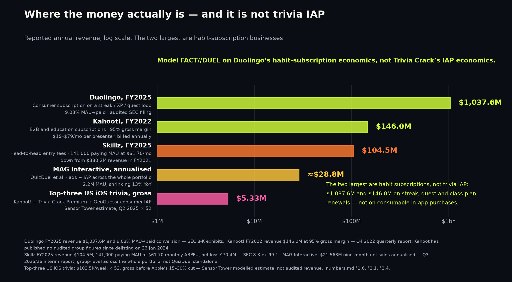
Speaker notes
LANDSCAPE
Scale without maintenance, or maintenance without scale: in the live 1v1 duel, nobody holds both.
- Of the products that own the installed base, the one that ran the duel has left it; the rest never ran one.
- Skillz FY2021 to FY2025: monthly ARPPU essentially flat — $61.75 (derived) to $61.70 (stated) — while paying MAU fell from 513,000 to 141,000.
- Competitive-play users monetise extraordinarily well per payer and churn extraordinarily hard — in a real-money cash-tournament product, and Skillz has never been profitable.
- Our axis is being the maintained 1v1 duel, with a long-tail loop built to earn a return visit. That is untested; the cohort the round buys is what tests it.
| Product | Scale (metric as stated) | Money | Live 1v1 duel? | Latest signal |
|---|---|---|---|---|
| Trivia Crack (etermax) | 267,939,837 lifetime Android installs (Play internal; store shows 100M+) | ~$33K/wk, Trivia Crack Premium, US iOS gross, Q2 2025 (est.) | Pivoted away | Listing retitled around a FOX TV tie-in |
| MAG Interactive (owner of QuizDuel) | 2.2M group MAU, 9-mo avg to May 2026, -13% YoY | $21.563M group net sales, 9 months to May 2026 | Duel — live status not verified | iOS build updated 10 Sep 2026; 3.51 stars / 78 US ratings |
| Kahoot! | 100,263,409 lifetime Android installs | $146.0M FY2022, 95% gross margin, B2B/education | No — classroom/B2B | Private since 23 Jan 2024; Play build 3 Sep 2026 |
| Wayground (ex-Quizizz) | 10M+ Android installs | $31.5M Series B; ~$44M across disclosed rounds, no valuation | No | iOS app last updated 14 Nov 2025 |
| Quizion / TRIVIA GO! | 10+ / 10K+ Android downloads | None disclosed | Yes | Quizion updated 13 Aug 2026; TRIVIA GO! stale since 22 May 2025 |
| FACT//DUEL | Zero users | Zero revenue | Yes — bot practice opponent | Publicly playable in a browser, 54 sample questions |
Speaker notes
- play.google.com
- sensortower.com
- storage.mfn.se
- itunes.apple.com
- itunes.apple.com
- play.google.com
- kahoot.com
- newsweb.oslobors.no
- prnewswire.com
- itunes.apple.com
- play.google.com
- play.google.com
- sec.gov
- sec.gov
- FACT//DUEL internal: public/product/investor/numbers.md — status paragraph and §5.15 (company disclosure)
- FACT//DUEL internal: public/product/investor/numbers.md §7.1 and §7.2 (company disclosure)
RISKS
The risks that emptied this category are the first two on this list, and they set the milestones.
- Long-tail retention. Trivia Royale reported 45% D1 iOS — company-stated to TechCrunch, not audited — and closed eight months after launch, on 23 Feb 2021.
- Global median D30 across 16,000+ mobile games is 0.68-0.79% (GameAnalytics est., CY2025); the North American median is 1.18%.
- Opponent integrity. Skillz won a $42.9M jury verdict against AviaGames for willful patent infringement (9 Feb 2024); trial evidence showed bots run against paying humans.
- Benchmark transfer. Every retention, session and per-install monetisation benchmark in our model is measured on app-store installs, not web. Our own instrument is now the route to a web-first number (§5.14, §7.3).
- Measurement selection. The cohort rate comes only from devices that opt in to the anonymous daily ping, so its denominator is consenting devices, not all of them. We will publish it as exactly that.
- Content depth. 54 sample questions is a demo bank. The ask funds four engineers and no separate content line; the target and production rate are still to be set (§4.4).
- Model honesty. Our base case (P) implicitly out-monetises a 9.03%-conversion subscription at Sporcle's $43.99/yr by 3.88x. We flag it, not hide it.
Speaker notes
- techcrunch.com
- gameanalytics.com
- sec.gov
- sporcle.com
- sec.gov
- FACT//DUEL internal: public/product/investor/numbers.md §2.3, §4.3 and §4.4 (company disclosure)
- FACT//DUEL internal: public/product/investor/numbers.md §3.5, §5.2 and §5.14 (company disclosure)
- FACT//DUEL internal: public/product/investor/numbers.md §7.1 and §7.2 (company disclosure)
TEAM
TO BE COMPLETED BY THE FOUNDER
- TO BE COMPLETED BY THE FOUNDER. No team member, hire, advisor, partner or customer is claimed in this deck.
- The plan (P) budgets four engineers at YC's $15,000/engineer/month rule of thumb over 18 months = $1,080,000 (numbers.md §4.5) — a rule of thumb, not a measured 2026 cost base.
- This slide must name those four, with agreement in writing, before the deck is sent.
- Roles the milestone list requires: backend — accounts, server-side progression and the cohort service behind the shipped measurement layer; client and game engineering for the duel and progression surfaces.
- Content and question production is an unbudgeted role beyond the four-engineer line; the target and production rate are still to be set (§4.4, milestone 4).
- Founder background — TO BE COMPLETED BY THE FOUNDER.
Speaker notes
THE ASK
About $1.2M for 18 months, to buy the one number this deck does not have.
- 4 engineers x $15,000/month x 18 months = $1,080,000 (P). Raising about $1.2M (P), inside YC's $500k-$1.5M band.
- $15,000 is YC's own rule of thumb for an all-in engineer month — undated editorial guidance, not a measured or inflation-indexed 2026 cost base.
- Illustrative, not a price: at Carta's Q3 2025 median seed pre-money of $16.0M, $1.2M into $17.2M post would be 6.98% dilution (P).
- YC's full sentence: 'as little as 10%... is wonderful, but most rounds will require up to 20% dilution and you should try to avoid more than 25%.'
- It buys: a published D1/D7/D30 cohort of 1,000+ players; growth of the bank from its current 54 questions, to a target and rate we must still set.
- It no longer has to buy the measurement layer: that shipped on 13 Sep 2026, tested, with a player-facing screen and an aggregate-only cohort report (numbers.md §7.1).
- Plus an opponent-integrity answer and one validated monetisation route. Then we come back with data, not benchmarks.
Speaker notes
Appendix
APPENDIX — MARKET STRUCTURE
Appendix A — the ~1,000x gap between the category's claimed size and its observed revenue.
- Top-down vendors size the nearest categories at $3.0bn (second-screen sports apps) to $8.09bn (fan engagement).
- Observed: Sensor Tower estimates those three at ~$102.5K in their peak weeks of Q2 2025 (~$5.33M/yr if sustained). The gap is roughly three orders of magnitude.
- Thesis reading: the category is structurally under-monetised — 267,939,837 lifetime Trivia Crack installs, duels abandoned.
- Risk reading: trivia audiences do not pay and this is the ceiling. HQ, QuizUp and Trivia Royale all died with audiences.
- The reconciliation is slide 10: the category monetises through habit subscriptions, not consumer trivia IAP.
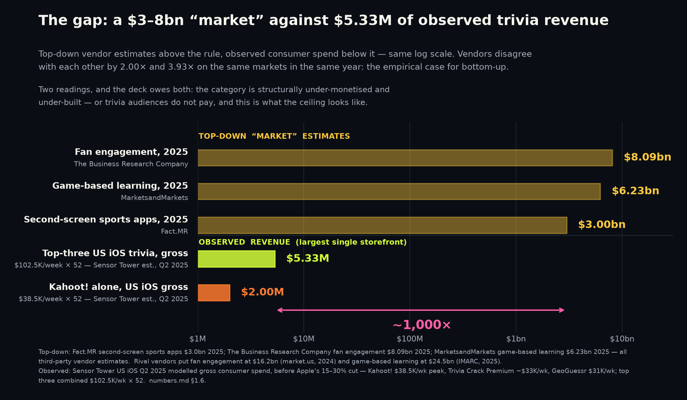
Speaker notes
APPENDIX — THE MODEL
Appendix B — three-year scenarios, all figures (P): plans built on third-party benchmarks.
- One model, three input sets. Only D30 retention, payer rate and install volume change between scenarios.
- Install volumes are chosen assumptions with no company data behind them. That is stated, not softened.
- Even the optimistic case assumes only median casual per-install monetisation; all optimism sits in volume.
- Subscription cross-check: conservative agrees within 8%; base diverges 3.88x; optimistic 5.26x.
- Break-even blended cost per install: $0.37 / $1.36 / $1.89. Trivia Royale's was under $0.20 — and it still died.
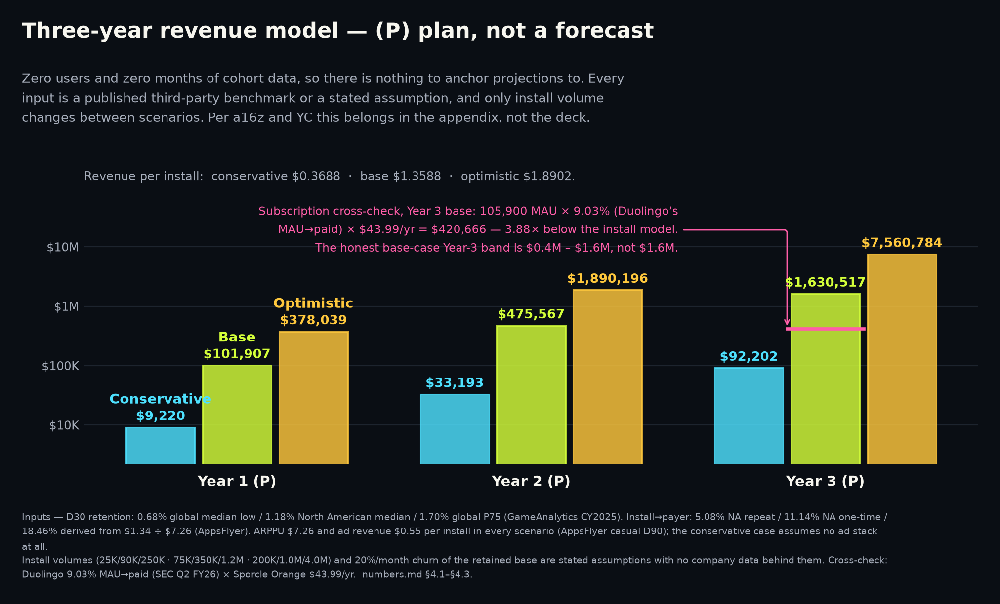
| Scenario (P) | Y3 installs | Rev / install | Y3 revenue | Y3 steady MAU | Subscription cross-check |
|---|---|---|---|---|---|
| Conservative | 250,000 | $0.3688 | $92,202 | 21,542 | $85,570 — agrees within 8% |
| Base | 1,200,000 | $1.3588 | $1,630,517 | 105,900 | $420,666 — 3.88x divergence |
| Optimistic | 4,000,000 | $1.8902 | $7,560,784 | 361,667 | $1,436,647 — 5.26x divergence |
Speaker notes
APPENDIX — MARKET SIZING
Appendix C — TAM, SAM and SOM in full, including the number we chose not to put on the slide.
- No penetration percentage appears anywhere in TAM or SAM. Every haircut lives in SOM, where it belongs.
- TAM-B adds the 1bn+ global cricket bloc but applies US ARPU to a South Asian population — directional only.
- Newzoo contradicts that directly: APAC generated $95.0bn of 2025 games revenue against North America's $54.0bn.
- Excluded on purpose: Europe, Latin America, and every science-audience bloc. Followers and visits are not people.
- SOM is 0.14%-0.23% of SAM. A seed-stage SOM that is a fraction of one percent is what honest arithmetic produces.
| Layer | Population | x ARPU | Result | Source of population |
|---|---|---|---|---|
| TAM-A (on the slide) | 216.8M US second-screen adults | $7.80 - $13.07 | $1.69bn - $2.83bn | EMARKETER, 2026 |
| SAM | 90.3M NA fantasy/betting adults | $7.80 - $13.07 | $704M - $1.18bn | FSGA / Angus Reid, 2026 |
| SOM (P) | ~106,000 steady-state MAU | base-case model | $0.4M - $1.6M (P) | Chosen Year-3 plan target |
| TAM-B (appendix only) | 1,216.8M incl. cricket bloc | $7.80 - $13.07 | $9.49bn - $15.90bn | ICC, 1bn+ fans aged 16-69 |
Speaker notes
APPENDIX — WHAT HAPPENED BEFORE
Appendix D — the graveyard in full, with capital raised and what it ended up worth.
- Every row is from a filing or contemporaneous reporting. No estimate in this table is ours.
- The pattern: large audiences, cheap acquisition, no durable day-30 behaviour and no working price.
- QuizUp's $3.2M fair-value mark is the honest ceiling for a large unmonetised trivia audience.
- Skillz is the live adjacent case: the money is real, and so is the churn.
| Product | Peak | Capital | Ending |
|---|---|---|---|
| HQ Trivia | 2.38M concurrent players, 28 Mar 2018 | $12,539,999 sold of $15,000,001 offered | 67,000 installs in Jan 2020; shut 14 Feb 2020, 25 staff |
| QuizUp | ~20M users claimed 19 May 2014; 1bn+ matches | ~$32.4M equity per SEC Form Ds | Sold to Glu for $7.5M of cancelled notes, booked at $3.2M |
| Trivia Royale | 2.5M downloads in ~3 weeks; 45% D1 iOS | $9,155,139 + $1,499,913 per SEC Form Ds | Closed 23 Feb 2021, eight months after launch, 16 staff |
| Skillz (live, adjacent) | FY2021: $380.2M revenue, 513,000 paying MAU | Public (NYSE: SKLZ) | FY2025: $104.5M revenue, 141,000 paying MAU |
Speaker notes
APPENDIX — LIMITS OF THE EVIDENCE
Appendix E — what we do not know, and what would settle each of it.
- Every number about FACT//DUEL: no DAU, no D1/D7/D30 rate, no session length, no conversion, no CAC, no LTV, no revenue. The measurement layer shipped; the players did not (§7.1).
- Whether app-store benchmarks transfer to a web product with no install step and no push notifications. They may not.
- CAC or CPI for trivia in 2025-26: no verified benchmark of any kind exists in our evidence base.
- Genre ARPDAU: the circulated bands failed verification as citation laundering and are excluded from this deck.
- Whether consumer trivia can monetise at scale at all. Our own paid cohort is what settles it, and the round buys it.
Speaker notes
APPENDIX — PRODUCT
Appendix F — the shipped surfaces, for anyone who would rather play it than read about it.
- Player record, badges, stamps and the Locker: the long-tail progression surface, all of it device-local.
- Every visual effect is generated at runtime — procedural audio with no audio files, and 3D loaded lazily.
- Every action works without WebGL; reduced-motion settings override the effects layer toward less motion.
- None of this is a ranked or verified record, and none of it is sent to a server. Reset clears it.
- Play it rather than reading about it: https://occult-kranti.github.io/fact-duel/ — no install, no account, no server, no request to us.
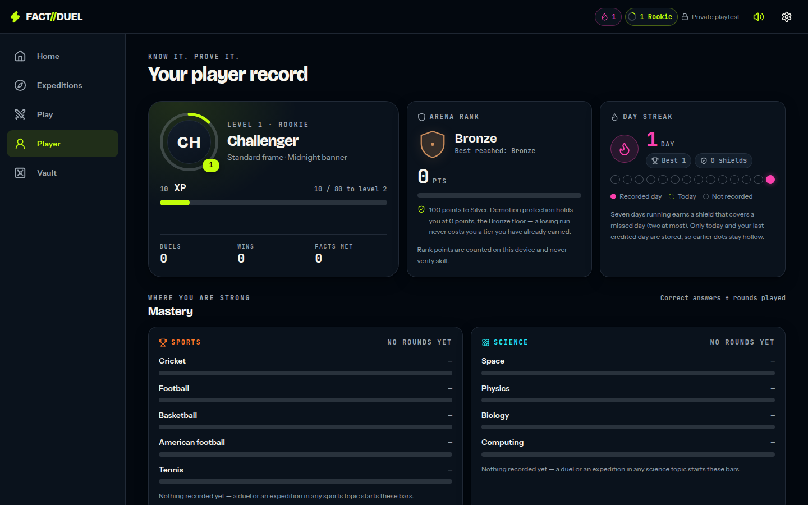
Speaker notes
APPENDIX — THE MEASUREMENT LAYER
Appendix G — how retention is measured, what is deliberately not measured, and why the rate still needs players.
- Per device: install day, active days, session count, engaged time, and four counters — duel rounds, matches, expedition cards, quests (lib/analytics.mjs, 24 tests).
- Per device: D1 / D7 / D30 as true, false, or null while the window is still open. A test asserts that an unfinished window can never read as a miss.
- One device is a sample of one. No export is shaped like a rate, and the screen says so in its own copy — a rate needs a cohort.
- Privacy: no third-party SDK, nothing personal, and the analytics module makes no network call. The player sees the whole record at /analytics and can export it as JSON or CSV, or erase it.
- The cohort rate comes from an opt-in anonymous daily ping (cohort-ping / cohort-report, table cohort_days, 20 tests). The report is aggregate-only: no per-device row, and buckets under five devices are suppressed.
- What none of this gives us today: a retention rate. That needs players. The instrument is what shipped; the cohort is what the round buys.